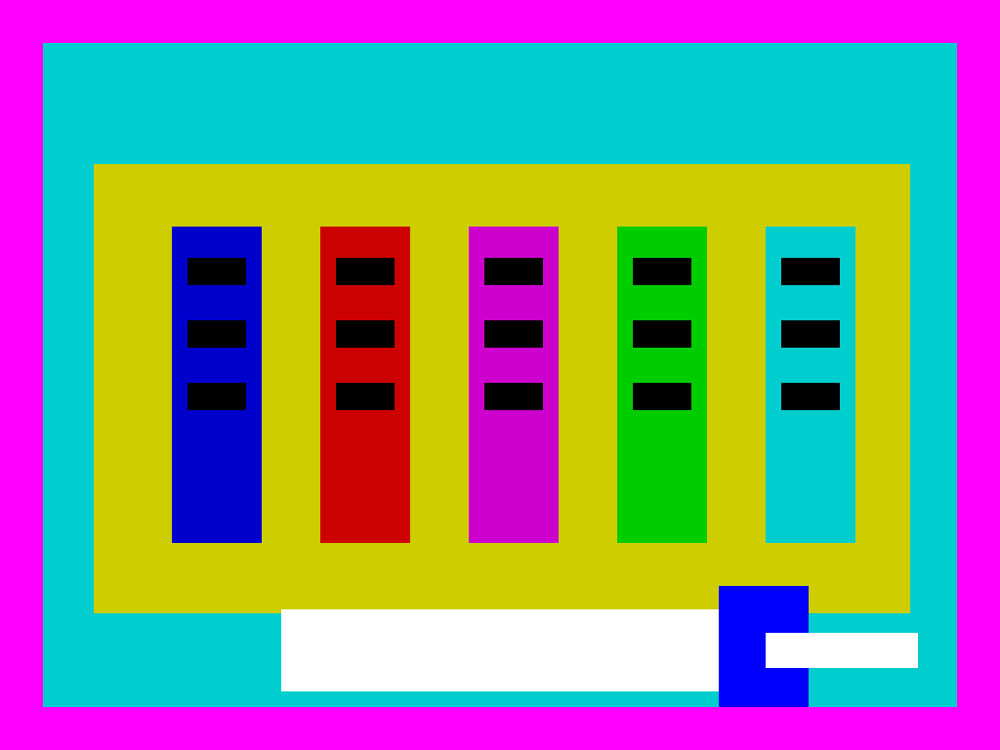

Para saber más

Estos recursos te ayudarán a profundizar en el ciclo del agua:
- Wikipedia · Ciclo hidrológico
- Materiales de educación permanente
- exelearning.net — la herramienta con la que se ha creado esta unidad
Licencia: CC BY-SA 4.0. Puedes reutilizar y modificar este material citando a su autor.